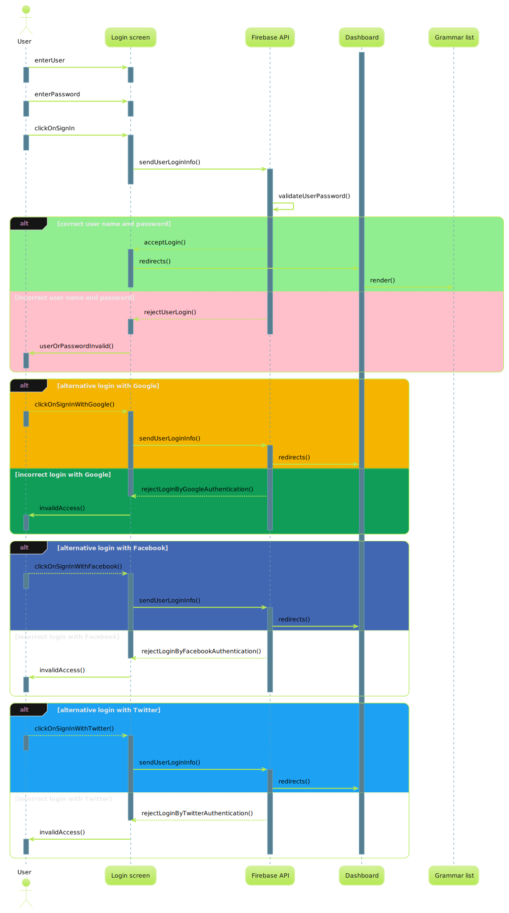
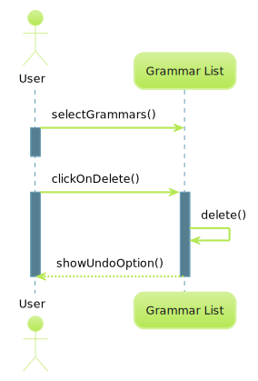
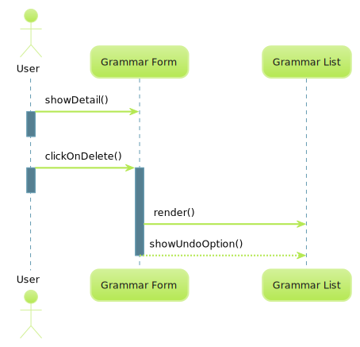
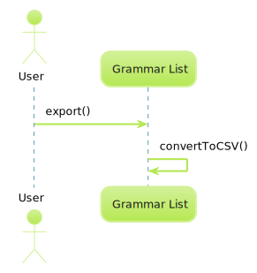
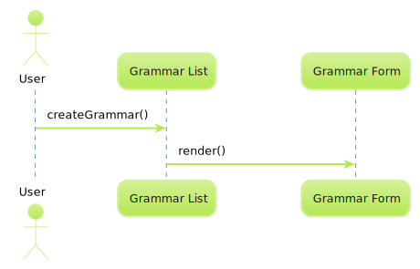
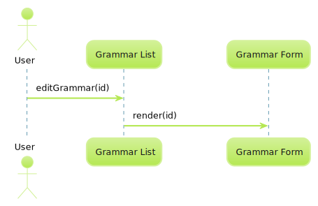
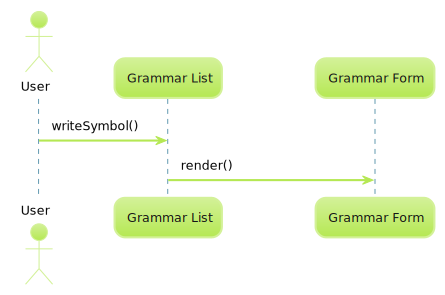
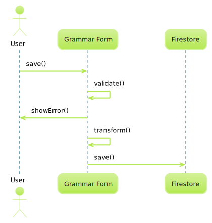
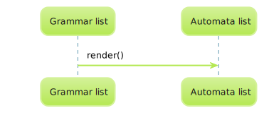
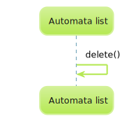

This is a Theory of Computation assignment course, indeed automata theory. So it is about Grammar, Languages, and Trees. See my full notes here.
Because it's not easy managing and teaching grammar, languages, and regular expressions, we’d decided to contribute with a web universal tool such as Turing Machines, push-down automata, DFA to NFA, … but there are apps such as the CFG Developer tool, CyberZHG’s toolbox, https://hritikbhandari.me/NFA-to-DFA-Converter/#, and so on, they don’t help the academic community to do his job easily. We are going to provide an online software solution to show the theory of computation, we’re writing down in English in order to approach a lot of people around the world, choosing the GPL-3 license and we focus on the student and professor experience.
This project should be in production on May 31, 2022, with basic requirements.
Use grammar, vocabulary, and algorithms, in order to achieve to represent and ensure them.
Sequences
Login. The dashboard needs an authenticated user. Delete n number of grammars.Delete a grammar.Export grammar.Create grammar.Edit grammar.Render production rules on each new symbol.Save grammar.Switch of grammar list to automata list.Delete n number of automata.Export automata.Create automata.Edit automata.Render the production rules on each terminal.Save automata.
Grammar
Formal grammar is a tool for syntax, not semantics.
Vocabulary
Grammar. A grammar is a 4-tuple (V,T,S,P),
where V is a finite set of objects called variables,
T is a finite set of objects, disjoint from V, called terminal symbols, in short terminals,
S∈V is a special symbol called the start variable,
P is a finite set of rules, called production rules, with each rule being a variable a string of variables and terminals.
BNF. A particular form of notation for grammar (Backus-Naur form).
CNF. A particular form of notation for grammar (Chomsky's normal form).
Language generated by G. Let G=(V,T,S,P), be grammar. Then the set
L(G)={w∈T∗:S→∗w}
is the language generated by G.
Production rules. If production rules are of the form
x→y
where x∈(V∪T)+, y∈(V∪T)∗. The production rules are applied in the following manner: Given a string w1=uxv
Rule
Application
Result
x→y
w1=uxv
w2=uyv
We say that w1derivesw2 o that w2 is derived from w1.
A rule can be used whenever it’s applicable.
If w1→w2→...→wn,
we say that w1 derives wn and writes
w1→∗wn. The * indicates an unspecified number of steps (including zero).
A language recognizer is a program that takes as input a string "x and y", and responds "yes" if x is a program phrase, and "no" if it is not. A regular expression is compiled into a recognizer by constructing a generalized transition diagram called a finite automaton. A finite automaton can be either deterministic or non-deterministic, where "non-deterministic" means that in a state may have more than one transition for the same input symbol.
Non-deterministic finite automata
A non-deterministic finite automaton (abbreviated, NFA) is a model consisting of:
1. A set of states denoted as states S.
2. A set of input symbols S (the alphabet input symbols).
3. A transition function move that transforms state-symbol pairs into sets of states.
4. A state S0 is considered the start (or initial) state.
5. A set of states F is considered as acceptance (or final) states.
An AFN can be represented by a labeled directed graph, called a transition graph,
in which the nodes are the states and the labeled edges represent the transition functions.
When describing an AFN, the network representation of transitions is used. In a computer, the transition function of an AFN can be implemented in several ways. The simplest implementation is a table of transitions with one row for each state and one column for each input symbol and? if necessary.
Deterministic finite automata
A deterministic finite automaton (abbreviated, DFA) is a particular case of a non-deterministic finite automaton in which:
1. No state has a transition ? that is, a transition with the input? , y
2. For each state s and each input symbol a, there is exactly one edge labeled a coming out of s. exactly one edge labeled a coming out of s.
A deterministic finite automaton has a transition from each state with any input. If a transition table is being used to represent the transition function of an AFD, then each entry in the transition table is a single state.
As a consequence, it is very easy to determine whether or not a deterministic finite automaton accepts an input string since there is at most one path from the start state labeled with that string.

{kind=link}
{kind=link}


{kind=link}
{kind=link}
{kind=link}
{kind=link}
{kind=link}
{kind=link}
{kind=link}
{kind=link}
{kind=link}
{kind=link}
{kind=link}


{kind=link}
{kind=link}